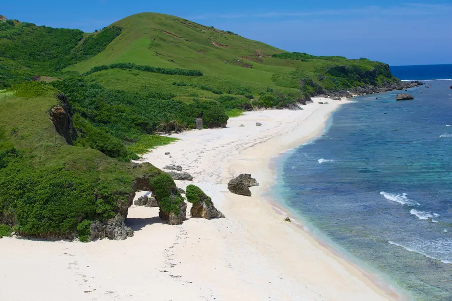
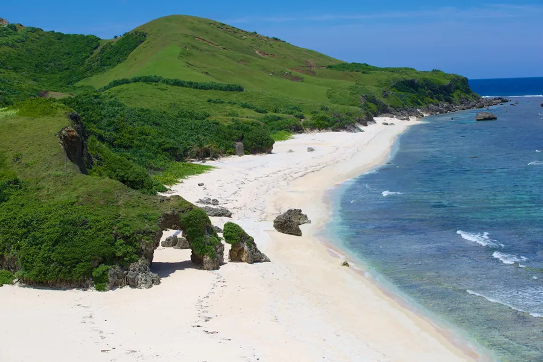
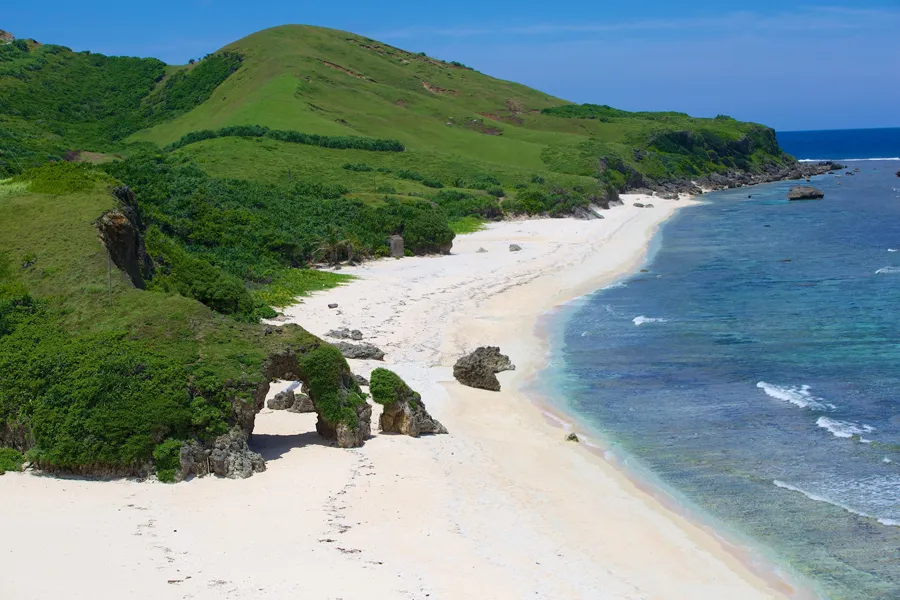
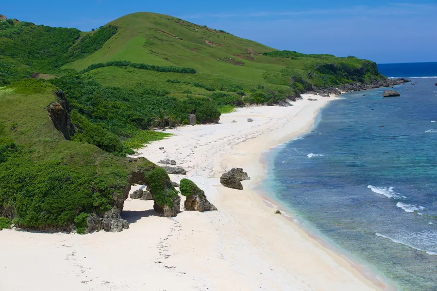

 

Batanes is the smallest province in the Philippines, located in the northernmost part of the country. It is an archipelagic province that consists of 10 islands, with only three of them being inhabited. The province has a total land area of 230 square kilometers 123. Batanes is known for its scenic waters and terrain, clean environment, and unique culture of the islands’ first settlers, the Ivatans. The capital of Batanes is Basco, which is located on the island of Batan. Batanes Island, also called the Home of the Winds, offers a unique type of refuge — peace and quiet, and the taste of a back-to-basics lifestyle. It has a little bit of everything for different types of travelers: the mountains, the sea, the rolling hills, and the food. Despite its distance and limited flights to Batanes, its one of the top tourist destinations in the Philippines. A trip to Batanes Island is a welcome escape from the hustle and bustle of City living.
It is a popular tourist destination for its beaches, resorts, and natural attractions, as the Chocolate Hills and the Philippine tarsier.